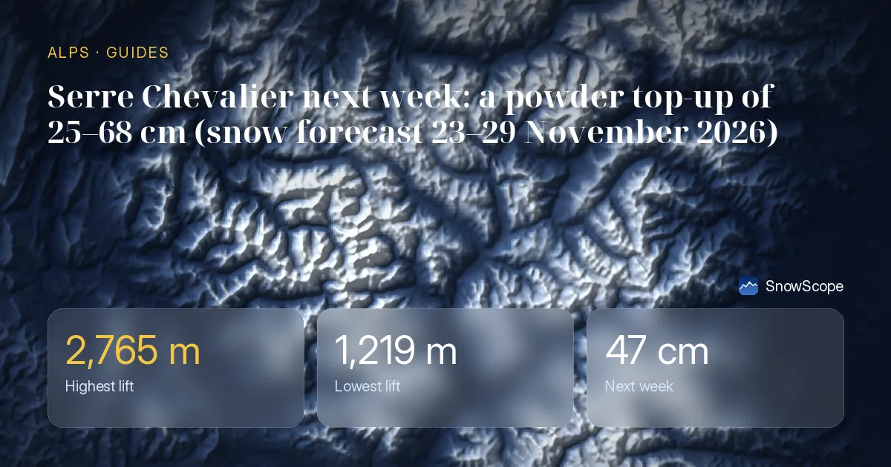
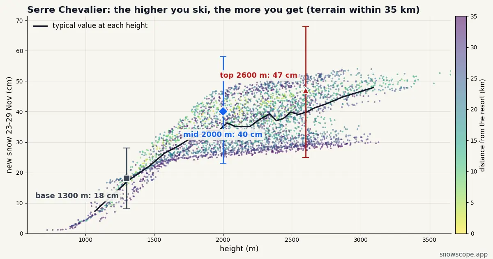

Serre Chevalier next week: a powder top-up of 25–68 cm (snow forecast 23–29 November 2026)
Next week brings two waves of snow to Serre Chevalier, stacking fresh powder onto a solid base laid down this week. The upper slopes will gain 47 cm between Monday 23 and Sunday 29 November, with Wednesday 25 November as the standout day for riding new snow.
See the live snow forecast for Serre Chevalier in the SnowScope appSnow depth, powder alerts and the 3D map, free.
This week sets the stage
Before next week arrives, understand what is already there. This week—17 to 20 November—the top lifts above 2600 m pick up 62 cm (a range of 42–83 cm). That heavy fall matters because next week's powder will land on top of it, not on bare ground. At the base, almost nothing falls this week, so the valley floor stays lean.
Next week's snow is the second course. The upper mountain will be in far better shape after two storms in succession than after one alone.

Breaking down next week by height
The forecast splits cleanly by altitude. Near 2600 m you get 47 cm. Around 2000 m the number drops to 40 cm. At 1300 m at the base, expect 18 cm. The range widens as you go higher: at the top, it spans 25–68 cm; at the base, only 8–28 cm. That spread tells you the upper mountain is more certain to fill in.
The timing concentrates the fall. Tuesday 24 November adds 8 cm to the top (up to 10 cm). Wednesday 25 is the flood: 20 cm (up to 26 cm) on the upper slopes. Thursday 26 November contributes 8 cm more (up to 13 cm). Sunday 29 November brings a final 9 cm (up to 19 cm). Between those days, only flurries arrive.
Where the best snow sleeps
The top lifts that climb above Chantemerle and Le Monêtier—the north-facing terrain and the high bowls—will hold the deepest and cleanest snow. If you chase the softest turns, the north-east-facing slopes above Le Monêtier and the larch forest reward you most when the light flattens. Larches open the terrain on overcast days and frame the view on clear ones.
Lower down, the story changes. The Briançon end of the valley faces south and warms fastest. If a mild day sneaks through mid-week, the lower runs there will turn to heavy, sticky snow first.
Which day should you go?
If you can choose one day, pick Thursday 26 or Friday 27 November. By then Wednesday's 20 cm (up to 26 cm) has settled slightly and tracked into the trees, but it is still fresh and tracked lightly. You avoid the chaos of the peak day and ski the gift it left behind.
The base stays thin relative to the top: 18 cm is half of what falls on the upper mountain. Pack a base layer and pick a run where rocks are unlikely to bite through early-season snow.
How certain is this forecast?
The range at the top—25 to 68 cm—is wide, which is normal a week ahead. Use 47 cm as your planning figure, not a guarantee. The timing of the snowfall (Wednesday 25 is the peak) is more reliable than the exact total. By next Sunday, more data will narrow the range.
Nearby resorts show Serre Chevalier is in line with its neighbours. La Grave (24 km away) sees 49 cm at the top; Les 2 Alpes (33 km away) gets 47 cm; Sestriere (28 km away) gets 30 cm. A few centimetres difference is normal across the range of mountains and cannot be trusted to separate them.
Safety and logistics
New snow means new avalanche risk on steep terrain. Before you go off-piste, check the latest French avalanche bulletin (BERA) for the massif. The resort will set opening dates on its own schedule based on what it sees and skis; our forecast only says how much snow is coming.
Serre Chevalier's larch woods are famous for their grip and visibility in flat light. That advantage peaks on days when fresh snow sits on them and the sky closes in.
Tips for skiers
- Ride the peak: Thursday 26 or Friday 27 November gives you Wednesday's fresh snow without the crowded lifts.
- Height matters most: plan to spend your time above 2000 m, where the snow is deepest and snow-to-rock ratio is safest.
- Watch the base: 18 cm is enough to ski on, but pick the terrain carefully and avoid the southern aspect of the Briançon valley if the forecast turns mild.
- New snow, new risk: consult the BERA avalanche bulletin before entering steep, ungroomed terrain.
- The range is the message: 25–68 cm at the top reflects the forecast's true uncertainty a week ahead. Plan flexibly.
About these numbers
Resort snow depths are the deepest snow on the resort's upper slopes on the date shown; they are estimates for an area, not a measurement at one point. Forecasts can change. Always read the official avalanche bulletin before going off-piste.
Cite this report
For research, teaching or the press: the numbers and charts are free to reuse under CC BY 4.0 with this citation.
SnowScope (2026), Serre Chevalier next week: a powder top-up of 25–68 cm (snow forecast 23–29 November 2026), https://snowscope.app/blog/en/2026/11/serre-chevalier-powder-forecast-next-week-23-29-november-2026.html, accessed 2026-11-16
SnowScope (Atlas Labs). (2026, November 16). Serre Chevalier next week: a powder top-up of 25–68 cm (snow forecast 23–29 November 2026). SnowScope snow reports. https://snowscope.app/blog/en/2026/11/serre-chevalier-powder-forecast-next-week-23-29-november-2026.html
BibTeX
@misc{snowscope2026serrechevalierpowderfore,
author = {{SnowScope (Atlas Labs)}},
title = {Serre Chevalier next week: a powder top-up of 25–68 cm (snow forecast 23–29 November 2026)},
year = {2026},
month = nov,
howpublished = {\url{https://snowscope.app/blog/en/2026/11/serre-chevalier-powder-forecast-next-week-23-29-november-2026.html}},
note = {Published 2026-11-16 11:26 UTC; accessed 2026-11-16}
}· CC BY 4.0 · Methods, data and tools →
Serre Chevalier: snow and temperature by height, this winter vs last (tools) →
Follow Serre Chevalier
Free: a message when fresh snow is coming, and the forecast every morning.
More snow reports

How reliable is each?

December in the Southern Alps will be warmer and wetter than usual, but snow depth by year-end should stay close to normal. SnowScope analysis of 11 November 2026.

Livigno's snow today, what the European seasonal forecast says about December, and why height beats a warm month at Christmas.